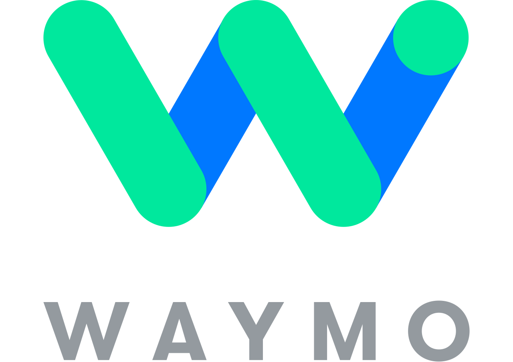
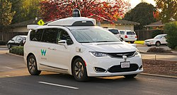
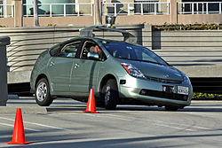
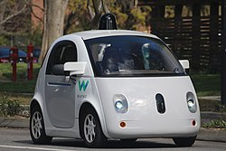
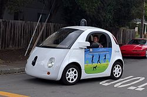
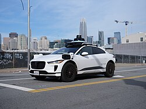
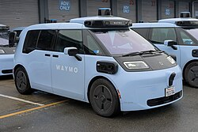
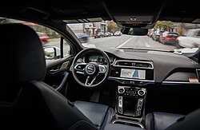

Waymo
Source: https://en.wikipedia.org/wiki/Waymo
Category: products_hardware
Depth: 1
Summary
Waymo LLC is an American autonomous driving technology company headquartered in Mountain View, California. It is a subsidiary of Alphabet Inc., Google's parent company. As of March 2026, Waymo operates public commercial robotaxi services in 10 US metropolitan areas, has 3,000 robotaxis in service, provides 500,000 paid rides per week and had logged 200 million fully autonomous miles.
Images








Full Article
Autonomous car technology company
Waymo LLC (/weɪmoʊ/ WAY-moh) is an American autonomous driving technology company headquartered in Mountain View, California. It is a subsidiary of Alphabet Inc., Google's parent company. As of March 2026[update], Waymo operates public commercial robotaxi services in 10 US metropolitan areas, has 3,000 robotaxis in service, provides 500,000 paid rides per week and had logged 200 million fully autonomous miles.
The company traces its origins to the Stanford Racing Team, which competed in the 2005 and 2007 Defense Advanced Research Projects Agency (DARPA) Grand Challenges. Google's development of self-driving technology began in January 2009 and the project was revealed in October 2010. In December 2016, the project was renamed Waymo and spun out of Google as part of Alphabet. In October 2020, Waymo became the first company to offer service to the public without safety drivers.
Waymo is run by co-CEOs Tekedra Mawakana and Dmitri Dolgov since April 2021. The company raised $11 billion in multiple outside funding rounds by 2024. In February 2026, Waymo raised $16 billion, which valued the company at $126 billion.
In January 2026, The National Transportation Safety Board and National Highway Traffic Safety Administration opened investigations into Waymo's robotaxis for recurring incidents of illegally passing stopped school buses, and one incident where a robotaxi hit a child who ran out from behind a parked SUV in a school zone.
History
Ground work
Google's development of self-driving technology began on January 17, 2009, at Google X lab, run by co-founder Sergey Brin. The project was launched at Google by Sebastian Thrun, the former director of the Stanford Artificial Intelligence Laboratory (SAIL) and Anthony Levandowski, founder of 510 Systems and Anthony's Robots.
The initial software code and artificial intelligence (AI) design of the effort started before the team worked at Google, when Thrun and 15 engineers, including Dmitri Dolgov, Mike Montemerlo, Hendrik Dahlkamp, Sven Strohband, and David Stavens, built Stanley and Junior, Stanford's entries in the 2005 and 2007 DARPA Challenges. Later, aspects of this technology were used in a digital mapping project for SAIL called VuTool. In 2007, Google acqui-hired the entire VuTool team to help advance Google's Street View technology.
As part of Street View development, 100 Toyota Priuses were outfitted with Topcon digital mapping hardware developed by 510 Systems.
In 2008, the Street View team launched project Ground Truth, to create accurate road maps by extracting data from satellites and street views.
Pribot
In February 2008, a Discovery Channel producer for the documentary series Prototype This! phoned Levandowski. The producer requested to borrow Levandowski's Ghost Rider, the autonomous two-wheeled motorcycle Levandowski's Berkeley team had built for the 2004 DARPA Grand Challenge that Levandowski had later donated to the Smithsonian. Since the motorcycle was not available, Levandowski offered to retrofit a Toyota Prius as a self-driving pizza delivery car for the show.
As a Google employee, Levandowski asked Larry Page and Thrun whether Google was interested in participating in the show. Both declined, citing liability issues. However, they authorized Levandowski to move forward with the project, as long as it was not associated with Google. Within weeks Levandowski founded Anthony's Robots to do so. He retrofitted the car with light detection and ranging technology (lidar), sensors, and cameras. The Stanford team behind the Stanley car provided its code base to the project. The ensuing episode depicting Pribot delivering pizza across the San Francisco Bay Bridge under police escort aired in December 2008.
The project success led Google to greenlight Google's self-driving car program in January 2009. In 2011, Google acquired 510 Systems (co-founded by Levandowski, Pierre-Yves Droz and Andrew Schultz), and Anthony's Robots for an estimated US$20 million. Levandowski's vehicle and hardware, and Stanford's AI technology and software, became the nucleus of the project.
Project Chauffeur
After almost two years of road testing with seven vehicles, the New York Times revealed the existence of Google's project on October 9, 2010. Google announced its initiative later the same day.
Starting in 2010, lawmakers in various states expressed concerns over how to regulate autonomous vehicles. A related Nevada law went into effect on March 1, 2012. Google had been lobbying for such laws. A modified Prius was licensed by the Nevada Department of Motor Vehicles (DMV) in May 2012. The car was "driven" by Chris Urmson with Levandowski in the passenger seat. This was the first US license for a self-driven car.
In January 2014 Google was granted a patent for a transportation service funded by advertising that included autonomous vehicles as a transport method. In late May, Google revealed an autonomous prototype, which had no steering wheel, gas pedal, or brake pedal. In December, Google unveiled a Firefly prototype that was planned to be tested on San Francisco Bay Area roads beginning in early 2015.
In 2015, Levandowski left the project. In August 2015, Google hired former Hyundai Motor executive, John Krafcik, as CEO. In fall 2015, Google for the first time to non-employees provided a ride in a fully autonomous vehicle in Austin, Texas. The passenger was a blind man. It was the first entirely autonomous trip on a public road. It was not accompanied by a test driver or police escort. The car had no steering wheel or floor pedals. By the end of 2015, Project Chauffeur had covered more than a million miles.
Google spent $1.1 billion on the project between 2009 and 2015. For comparison, the acquisition of Cruise Automation by General Motors in March 2016 was for $500 million, and Uber's acquisition of Otto in August 2016 was for $680 million.
Waymo
In May 2016, Google and Stellantis announced an order of 100 Chrysler Pacifica hybrid minivans to test the self-driving technology. In December 2016, the project changed its name to Waymo and spun out of Google as part of Alphabet. The name was derived from "a new way forward in mobility". In May 2016, the company opened a 53,000-square-foot (4,900 m2) technology center in Novi, Michigan.
In February 2017, Waymo sued Uber and its subsidiary self-driving trucking company, Otto, alleging trade secret theft and patent infringement. The company claimed that three ex-Google employees, including Anthony Levandowski, had stolen trade secrets, including thousands of files, from Google before joining Uber. The alleged infringement was related to Waymo's proprietary lidar technology, Google accused Uber of colluding with Levandowski. Levandowski allegedly downloaded 9 gigabytes of data that included over a hundred trade secrets; eight of which were at stake during the trial. An ensuing settlement gave Waymo 0.34% of Uber stock, the equivalent of $245 million. Uber agreed not to infringe Waymo's intellectual property. Part of the agreement included a guarantee that "Waymo confidential information is not being incorporated in Uber Advanced Technologies Group hardware and software." In statements released after the settlement, Uber maintained that it received no trade secrets. In May, according to an Uber spokesman, Uber had fired Levandowski, which resulted in the loss of roughly $250 million of his equity in Uber, which almost exactly equaled the settlement. Uber announced that it was halting production of self-driving trucks through Otto in July 2018, and the subsidiary company was shuttered. In 2020, Levandowski pled guilty to one of 33 charges, and was sentenced to 18 months in prison.
Waymo began testing minivans without a safety driver on public roads in Chandler, Arizona, in October 2017. In 2017, Waymo unveiled new sensors and chips that are less expensive to manufacture, cameras that improve visibility, and wipers to clear the lidar system. At the beginning of the self-driving car program, they used a $75,000 lidar system from Velodyne. In 2017, the cost decreased approximately 90 percent, as Waymo converted to in-house built lidar. Waymo has applied its technology to various cars including the Prius, Audi TT, Chrysler Pacifica, and Lexus RX450h. Waymo partners with Lyft on pilot projects and product development.
Waymo started testing in Phoenix without safety drivers in November 2017.
In March 2018, Jaguar Land Rover announced that Waymo had ordered up to 20,000 of its I-Pace electric SUVs at an estimated cost of more than $1 billion. In late May 2018, Alphabet announced plans to add up to 62,000 Pacifica Hybrid minivans to the fleet. Also in May 2018, Waymo established Huimo Business Consulting subsidiary in Shanghai.
In October 2018, the California Department of Motor Vehicles issued a permit for Waymo to operate cars without safety drivers. Waymo was the first company to receive a permit for day and night testing on public roads and highways. Waymo announced that its service would include Mountain View, Sunnyvale, Los Altos, and Palo Alto. In July 2019, Waymo received permission to transport passengers.
In December 2018, Waymo launched Waymo One in Phoenix, transporting passengers. The service used safety drivers to monitor some rides, with others provided in select areas without them. In November 2019, Waymo One became the first autonomous service worldwide to operate without safety drivers. Waymo One launched in San Francisco, beginning with a "trusted tester" rollout. In March 2022, Waymo began offering rides for Waymo staff in San Francisco without a safety driver.
In April 2019, Waymo announced plans for vehicle assembly in Detroit at the former American Axle & Manufacturing plant, bringing between 100 and 400 jobs to the area. Waymo used vehicle assembler Magna to turn Jaguar I-PACE electric SUVs and Chrysler Pacifica Hybrid minivans into Waymo Level 4 autonomous vehicles. Waymo subsequently reverted to retrofitting existing models rather than a custom design.
2020s
In March 2020, Waymo Via was launched after the company's announcement that it had raised $2.25 billion from investors. In May 2020, Waymo raised an additional $750 million. In July 2020, the company announced an exclusive partnership with auto manufacturer Volvo to integrate Waymo technology.
In April 2021, Krafcik was replaced by two co-CEOs: Waymo's COO Tekedra Mawakana and CTO Dmitri Dolgov. Mawakana is responsible for business operations, and Dolgov is responsible for the company's technology. Waymo raised $2.5 billion in another funding round in June 2021, with total funding of $5.5 billion. Waymo launched a consumer testing program in San Francisco in August 2021.
In May 2022, Waymo started a pilot program seeking riders in downtown Phoenix, Arizona. In May 2022, Waymo announced that it would expand the program to more areas of Phoenix. In 2023, coverage of the Waymo One area was increased by 45 square miles (120 km2), expanding to include downtown Mesa, uptown Phoenix, and South Mountain Village.
In June 2022, Waymo announced a partnership with Uber, under which Waymo will integrate its autonomous technology into Uber's freight truck service. Plans to expand the program to Los Angeles were announced in late 2022. On December 13, 2022, Waymo applied for the final permit necessary to operate fully autonomous taxis, without a backup driver present, within the state of California.
In January 2023, The Information reported that Waymo staff were among those affected by Google's layoffs of around 12,000 workers. TechCrunch reported that Waymo was set to kill its trucking program.
In July 2024, Waymo began testing its sixth-generation robotaxis which are based on electric vehicles by Chinese automobile company Zeekr, developed in a partnership first announced in 2021. They were anticipated to reduce costs, at a time when Waymo was operating at a loss.
In October 2024, Waymo closed a $5.6 billion funding round led by Alphabet, aimed at expanding its robotaxi services, bringing its total capital to over $11 billion. Around that time, the New York Times described Waymo as being "far ahead of the competition", in particular after Cruise had to suspend its operations after an accident in 2023.
Also in November 2025, the permit area in Northern California was expanded to include Santa Rosa and Sacramento. The Southern California permit area was expanded to stretch from the Mexican border to Ventura County. These new permit areas were approved by the California Department of Motor Vehicles (DMV). The permit area of the DMV is larger than the operating area. The operating area is slated to get expanded to cover San Diego in mid-2026.
In February 2026, Waymo raised a $16 billion funding round that valued the company at $126 billion, to fund further expansion into new markets. Bloomberg reported that $13 billion of that came from Alphabet.
Lobbying
Waymo regularly lobbies public officials and regulators throughout US cities and states, to encourage updates to laws so self-driving vehicles can operate in those locations. In 2024, Waymo spent $1.7 million on lobbying in the US. In the state of New York, Waymo has spent $1.8 million since 2019 on lobbying efforts, as of January 2026[update].
In February 2026, Waymo company representatives spoke to the United States Senate Committee on Commerce, Science, and Transportation and requested that the federal government create uniform nationwide standards for autonomous vehicle deployment. The company stated that unless the US reduces regulations that hamper innovation, US companies will lose the trillion dollar global autonomous vehicle market to Chinese companies.
Services
In 2017, Waymo highlighted four business uses for its autonomous technology: robotaxis; trucking and logistics; urban public transportation; and passenger cars. As of 2023, trucking is no longer a focus.
Robotaxis
Waymo currently serves select cities in the United States, and has announced expansion into Japan and the United Kingdom.
The service is accessed in most locations by using the Waymo iOS app or Android app; Waymo service in Austin and Atlanta is available by using the Uber app. Once a Waymo vehicle arrives, riders push a button to "start ride", and have optional "help", "lock", and "pull over" buttons. Rides usually complete without riders pressing any optional buttons. The car's steering wheel turns as the car makes turns, and a passenger may sit in the right-front passenger seat, but not in the driver's seat. Some information gathered by the car's sensors is displayed on a screen.
As of March 2026[update], Waymo has 3,000 robotaxis in service, provides 500,000 paid rides per week, and drives 4 million rider-only miles per week.
United States
Service areas in the United States
Airport service in the United States
| State | Airport | Status | Launch date | Ref. |
|---|---|---|---|---|
| Arizona | Phoenix Sky Harbor International Airport | Full commercial service | November 1, 2022 | |
| California | San Francisco International Airport | Waitlist service | January 29, 2026 | |
| San Jose International Airport | Full commercial service | December 1, 2025 | ||
| Florida | Miami International Airport | Testing | (No timeframe given) | |
| New Jersey | Newark Liberty International Airport | Testing | (No timeframe given) | |
| Tennessee | Nashville International Airport | Testing | (No timeframe given) | |
| Texas | Austin–Bergstrom International Airport | Testing | (No timeframe given) | |
| Dallas Love Field | Testing | (No timeframe given) | ||
| San Antonio International Airport | Waitlist service | March 31, 2026 |
Other potential expansion:
- California:
- Waymo communicated with officials from the city of Oakland and Oakland San Francisco Bay Airport in September 2025.
- As of November 2025[update], Waymo has DMV permission to drive autonomously in the entire nine-county San Francisco Bay Area plus the counties of Sacramento and Yolo, and in Southern California from Thousand Oaks to the Mexican border and east to I-15.
- North Carolina: Waymo had a "very preliminary" conversation with the city of Raleigh c. 2023.
- Oregon: Waymo has lobbied heavily to legalize robotaxis, as they are illegal as of February 2026[update]; state legislators including House Transportation Committee chair Susan McLain and Shelly Boshart Davis have expressed their support for legalization.
- Utah: Waymo communicated with state Senate Majority Leader Kirk Cullimore Jr. in 2026.
Japan
Service areas in Japan
| City | Status | Launch date | Ref. |
|---|---|---|---|
| Tokyo | Testing | 2026 |
United Kingdom
Service areas in the United Kingdom
| Country | City | Status | Launch date | Ref. |
|---|---|---|---|---|
| England | London | Testing | September 2026 |
Potential expansion to other countries
- Australia: Waymo has contacted Transport for NSW and the federal Department of Infrastructure, Transport, Regional Development, Communications, Sport and the Arts.
- Canada: Waymo has lobbied the federal government, the provincial governments of British Columbia and Ontario, and the city of Toronto.
- Singapore: Waymo joined the Ministry of Transport's Steering Committee on Autonomous Vehicles in August 2025.
- South Korea: As of March 2026[update], Waymo is in contact with the Ministry of Land, Infrastructure and Transport.
Public transit
In September 2025, Waymo and the city of Chandler, Arizona announced that Waymo would be integrated into Chandler's public microtransit service.
Trucking
In 2020 Waymo launched a self-driving truck development division designated as Waymo Via, to work with OEMs to integrate its technology into commercial vehicles. The company began testing Class 8 tractor-trailers in 2018 in Atlanta, expanding in 2019 to southwest shipping routes across Arizona, California, New Mexico and Texas. The company opened a trucking hub in Dallas, Texas in 2021. It partnered with Daimler to integrate autonomous technology into a fleet of Freightliner Cascadia trucks. Waymo operated 48 Class 8 autonomous trucks with safety drivers.
Waymo tested its technology in commercial delivery vehicles with United Parcel Service. In July 2020 Waymo and Stellantis expanded their partnership, including the development of Ram ProMaster delivery vehicles.
In July 2023, Waymo announced that it was moving away from commercial development of self-driving trucks to focus on the ride-hailing Waymo business, and shuttered the Waymo Via trucking program. The vast majority of employees who were on Waymo's trucking team moved to other roles within the company.
Delivery
Waymo has partnered with Uber Eats and DoorDash to deliver food.
Road maintenance
Waymo data is used by local governments for pothole detection.
Technology
Hardware
Google has invested heavily in matrix multiplication and video processing hardware such as the Tensor Processing Unit (TPU) to augment Nvidia's graphics processing units (GPUs) and Intel's central processing units (CPUs) used in Waymo vehicles.
Waymo manufactures a suite of self-driving hardware developed in-house. This includes sensors and hardware-enhanced vision system, lidar, and radar. Sensors give 360-degree views while lidar detects objects up to 300 metres (980 ft) away. Short-range lidar images objects near the vehicle, and radar is used to see around other vehicles and track objects in motion.
Software
Waymo uses a deep-learning architecture called VectorNet to predict vehicle trajectories in complex traffic scenarios. It uses a graph neural network to model the interactions between vehicles and has demonstrated state-of-the-art performance on several benchmark datasets for trajectory prediction.
Waymo Carcraft is a virtual world in which Waymo simulates driving conditions. The simulator was named after the video game World of Warcraft. With Carcraft, 25,000 virtual self-driving cars navigate through models of Austin, Texas; Mountain View, California; Phoenix, Arizona; and other cities.
Vehicles
| Manufacturer and Model | Driver version | Announcement Date | Introduction in Fleet | Current Status and Remarks. |
|---|---|---|---|---|
| Chrysler Pacifica (minivan) Plug-in hybrid | November 2017 in Phoenix: testing with safety driver. October 2020 in Phoenix: Waymo's first publicly offered Robotaxi service. | All vehicles retired since March 2023. This was the first vehicle that offered public Robotaxi service in the USA. It was also used in mapping and testing in many locations where Waymo later started service with other vehicles. | ||
| Jaguar I-Pace | Fifth gen | March 2018 (with a goal of getting 20,000 units on the road) | August 2021 in San Francisco. | Total order of 3,500 vehicles, the last of which are entering service during 2026. The I-Pace was and still is Waymo's exclusive vehicle for public revenue service from March 2023 until 2026. It is available to passengers in 11 different cities / areas as of 2026-04-10. |
| Zeekr / Waymo Ojai (based on Zeekr Mix) | Sixth gen | December 2021 | February 2026 in San Francisco and Los Angeles: Driverless testing service for employees only. | |
| Hyundai Ioniq 5 | Sixth gen | October 2024 | Hyundai plans to deliver 50,000 units to Waymo, starting in 2028. |
As of November 2025[update], most of Waymo's robotaxis are customized Jaguar I-Pace cars. Waymo plans to introduce Hyundai Ioniq 5 and Zeekr Ojai cars.
As of October 2024[update], Morgan Stanley estimated the total vehicle cost at over $120,000, and another source estimated $150,000. As of June 2025[update], another source estimates it to be above $100,000. Other costs include ride monitors, service personnel, and real estate for storing and servicing the vehicles.
In February 2026, Waymo's chief safety officer confirmed that the company employs remote assistance workers in the United States and the Philippines to address situations that the vehicles cannot independently solve. The company stated that the remote workers do not drive the vehicles, simply providing guidance to the vehicle, which can accept or reject it.
Operations, efficiency, and safety
From California Public Utilities Commission (CPUC) data, as of September 2025[update], Waymo delivered 4.75 million Passenger Miles Traveled (PMT) monthly, which required 6.57 million Vehicle Miles Traveled (VMT). This is a three-fold growth from September 2024 in both PMT and VMT, with the ratio staying roughly equal.
Vehicles have an average passenger occupancy of 0.75. In 70% of the trips, only one passenger is in the car. For 44% of miles, the vehicle is empty, and 4.6% of requested trips are cancelled.
In 2024, Waymo and insurance company Swiss Re published a study which estimated that Waymo generated 92% fewer bodily injury claims and 88% fewer property damage claims than human drivers over the same number of miles in the same locations. The study said that by the end of 2024, the company was facing two potential bodily injury claims (accidents where the Waymo vehicle was potentially at fault), and estimated that human drivers would have generated 26 bodily injury claims. For property damage claims, Waymo logged nine versus an estimated 78 for human drivers. Experts noted that the sample size in the study of 25 million miles driven is extremely small (0.0008%), compared to the 3 trillion miles logged annually by human drivers in the US.
Incidents and controversies
Accidents
In July 2021, the National Highway Traffic Safety Administration (NHTSA) started requiring autonomous vehicle companies to report any accidents which result in injury or property damage that occur within 30 seconds of the vehicle operating in autonomous mode. As of February 17, 2026[update], the (NHTSA) has logged 1,710 accidents (cumulative since July 2021), involving Waymo vehicles. From July 2021 to January 2025, Waymo's vehicles have been involved in about 30 accidents with injuries, though the NHTSA reports do not ascribe fault.
Some examples of Waymo accidents:
- In May 2023, a Waymo hit and killed a dog which ran out into the street in front of the car. According to Waymo, its car detected the dog, while the human safety driver did not, and that whether the vehicle would take evasive maneuvers or not depends on the expected trajectory of the dog. Waymo compares the performance of its autonomous systems to a theoretical Non-Impaired, with Eyes Always ON the conflict (NIEON) human driver's expected performance.
- On December 11, 2023, two Waymo cars hit a tow truck minutes apart from each other; Waymo recalled its software in response.
- On February 6, 2024, a Waymo hit and injured a cyclist who was obstructed behind an oncoming truck.
- On May 21, 2024, a Waymo hit a utility pole; Waymo recalled its software in response.
- On January 19, 2025, an empty Waymo was stopped in a line of cars when a speeding driver rear-ended the line, killing a passenger and a dog in another car; this was the first fatal crash involving Waymo.
- On February 16, 2025, a cyclist was hospitalized after being doored by a Waymo passenger; the cyclist sued Waymo, alleging that it had stopped in an unsafe location and failed to warn the passengers before exiting.
- On October 27, 2025, a Waymo in San Francisco hit and killed KitKat, a local bodega cat, after he darted under the car as it was pulling away. In response, Supervisor Jackie Fielder called for the state to pass legislation allowing local governments to ban self-driving cars.
- On November 30, 2025, a Waymo hit and killed a dog. According to the dog's owner, Waymo failed to notice what had happened and continued on after the collision.
- On January 23, 2026, a Waymo hit a child crossing the street, who suffered minor injures. The NHTSA opened an investigation into Waymo. According to Waymo and the NTSB, the child was obscured behind an SUV, and the Waymo car braked but was unable to avoid contact.
Legal and political disputes
- In January 2022, Waymo sued the California Department of Motor Vehicles (DMV) to prevent data on driverless crashes from being released to the public. Waymo maintained that such information constituted a trade secret. According to The Los Angeles Times, the "topics Waymo wants to keep hidden include how it plans to handle driverless car emergencies, what it would do if a robot taxi started driving itself where it wasn't supposed to go, and what constraints there are on the car's ability to traverse San Francisco's tunnels, tight curves and steep hills." The court ruled some details regarding safety records do not have to be released.
- In January 2024, the city attorney of San Francisco attempted to sue to prevent expansion of driverless vehicles including Waymo into San Francisco. The San Mateo County government soon after also sent a letter to regulators opposing expansion to its county.
- In May 2024, the NHTSA launched an investigation into potential flaws in Waymo vehicles, focusing on 31 incidents that included Waymo vehicles ramming into a closing gate, driving on the wrong side of the road, and at least 17 crashes or fires. Waymo recalled its self-driving software in May 2025. The investigation was closed in July 2025 with no further action taken.
- In July 2025, anti-Waymo protestors in Boston were joined by city officials, who expressed concerns over safety and the impact on rideshare drivers. Eight city councillors proposed an ordinance to restrict self-driving car services in Boston, with one provision requiring safety drivers.
- In September 2025, police in San Bruno, California pulled over a Waymo after it made an illegal U-turn.
- In November 2025, a man sued Waymo after he was falsely identified as a terrorist on the Specially Designated Nationals and Blocked Persons List and denied access to Waymo.
- In November 2025, New Jersey State Senator Andrew Zwicker proposed a bill to require a three-year pilot project for self-driving cars, with a safety driver present at all times; Waymo opposes the bill.
- In November 2025, San Diego City Council member Sean Elo-Rivera opposed Waymo expansion, citing the impact on taxi and rideshare drivers. In January 2026, the board of the San Diego Metropolitan Transit System passed a resolution opposing Waymo expansion.
- In November 2025, the city of Santa Monica, California banned Waymo from charging its vehicles between 11PM and 6AM, claiming that two of their charging stations are public nuisances, due to complaints from residents nearby about noise and light pollution. Waymo continued using the stations, and asked a court to declare their operations not a nuisance.
- In December 2025, several members of the Minneapolis City Council opposed Waymo expansion, citing the impact on taxi and rideshare drivers.
School bus incidents
In September 2025, a Waymo in Atlanta was recorded illegally passing a stopped school bus. Georgia State Representative Clint Crowe and State Senator Rick Williams criticized Waymo, with Williams stating his support for higher fines for self-driving cars.
- The NHTSA launched an investigation on October 20.
- Austin Independent School District (AISD) revealed that Waymo cars had illegally passed its school buses 20 times from the start of the school year to December 1, and asked Waymo to stop its operations during school drop-off and pick-up hours, but Waymo refused.
- Atlanta Public Schools later revealed six illegal passing incidents.
- Waymo recalled its self-driving software on December 8.
- As of January 15, 2026[update], AISD has reported four violations since the recall.
- The NHTSA launched a second investigation on January 23.
- The NTSB launched an investigation into an incident on January 12, and released a preliminary report on March 3; the Waymo car stopped for the bus, but then asked a human operator whether the bus still had its lights on, and the human operator said no.
- The NTSB launched another investigation following an incident on March 25.
Vandalism
In 2018, after the death of Elaine Herzberg — the first recorded case of a pedestrian fatality involving a self-driving car (an Uber test vehicle) — there were several cases of Waymo cars being vandalized.
In 2023, the San Francisco group Safe Street Rebel used a practice called "coning" to trap Waymo and Cruise cars with traffic cones as a form of protest after stating that the cars had been involved in hundreds of incidents.
In February 2024, during Lunar New Year celebrations in Chinatown, San Francisco, a mob of vandals attacked, graffitied, and set fire to a Waymo car. No one was injured.
In February 2024, a pair of Waymo passengers described an attack by an onlooker who attempted to cover the car's sensors.
In July 2024, Waymo sued two people who allegedly vandalized their cars.
During the June 2025 Los Angeles protests against mass deportation, several Waymo cars were set on fire when riots broke out. Officials including California Governor Gavin Newsom and Los Angeles Mayor Karen Bass condemned the destruction, attributing it to extremists infiltrating otherwise-peaceful protests.
Use of camera footage by police
Waymo has been criticized for the use of its camera footage by law enforcement agencies. According to Waymo, it "does not provide information or data to law enforcement without a valid legal request".
Other incidents
- In 2021, it was noted that Waymo cars kept routing through the Richmond District of San Francisco, with up to 50 cars each day driving to a dead end street before turning around.
- In August 2024, residents of San Francisco's SoMa district began to complain about noise pollution from Waymo vehicles honking at each other in a local parking lot. Residents reported that the car horns could be heard daily, with varying levels of activity, usually peaking around 4 AM and during evening rush hour. The honking appears to have been triggered by the self-driving cars backing in and out of the lot. The story caught attention after a resident began live streaming the cars. Waymo apologized and said the issue will be addressed with software updates.
- In December 2024, a Waymo car drove in circles around a parking lot with a passenger inside, which took several minutes to resolve remotely. Waymo says it has fixed the issue.
- In April 2025:
- A Waymo car got stuck in a drive-thru.
- A Waymo passenger reported being trapped in the car after it drove the wrong way and stopped in the middle of the road. According to Waymo, one of the passengers pressed the "pull over" button, and the passengers could have unlocked the doors by pulling twice on the door handle.
- In November 2025, a Waymo car drove right next to an ongoing felony traffic stop. The vehicle was given a command by a police officer on how to proceed, but it did not comply.
- In December 2025:
- A "minor collision" between two Waymo cars blocked an intersection.
- A Waymo passenger found a person hiding in the trunk of the car; Waymo was criticized for not having a system to detect this.
- A Waymo car got stuck on a bridge in the Venice Canal Historic District in Los Angeles during a parade.
- A Waymo car drove the wrong way on a one-way street.
- Waymo cars became inoperable during a large-scale power outage in San Francisco, blocking traffic and intersections. In response, Waymo temporarily halted ride-hailing services until power was restored. Authorities expressed concern that similar behavior during a disaster would block emergency responders and residents fleeing danger.
- In January 2026, a Waymo car drove on newly-built tracks of the Phoenix Valley Metro Rail.
- In March 2026:
- A Waymo in Austin attempted to make a U-turn but ended up stuck and blocked an ambulance responding to a mass shooting.
- A Waymo stopped between the train and the bar gate at a railroad crossing.
- In April 2026, a Waymo car drove the wrong way in a school zone.
See also
Notes
References
Primary sources
In the text, these references are preceded by a double dagger (‡):
Further reading
- Grant, Christian (May 2007). "Episode Exe006: Sebastian Thrun, Director, Stanford Artificial Intelligence Laboratory". Executive Talks. Archived from the original on April 1, 2021. Retrieved January 3, 2013.
- Lin, Patrick (July 30, 2013). "The Ethics of Saving Lives with Autonomous Cars Are Far Murkier Than You Think". Wired. Retrieved August 24, 2013.
- Marcus, Gary (November 27, 2012). "Moral Machines". The New Yorker. Retrieved August 24, 2013.
- Muller, Joann (May 27, 2013). "Silicon Valley vs. Detroit: The Battle for the Car of the Future". Forbes.
- Stock, Kyle (April 3, 2014). "The Problem with Self-Driving Cars". Bloomberg Businessweek. Archived from the original on April 4, 2014. Retrieved April 6, 2014.
- Walker Smith, Bryant (November 1, 2012), Automated Vehicles Are Probably Legal in the United States, Stanford Law School, retrieved August 24, 2013
External links

Wikimedia Commons has media related to Waymo.
- Official website

- Scalability in Perception for Autonomous Driving: Waymo Open Dataset
- Waymo Self Driving Car Videos. Archived April 14, 2024, at the Wayback Machine – citizen journalist recording Waymo autonomous trips in Phoenix area
| - v - t - e Alphabet Inc. | |
|---|---|
| Subsidiaries | |
| People | |
| - Category - Companies portal - icon Internet portal |
{kind=link}
| - v - t - e Self-driving cars, self-driving vehicles and enabling technologies | |
|---|---|
| Overview and context | - History of self-driving cars - Impact of self-driving cars - Intelligent transportation system - Context-aware pervasive systems - Mobile computing - Smart, connected products - Ubiquitous computing - Ambient intelligence - Internet of things - List of self-driving system suppliers |
| SAE Levels | |
| Vehicles | |
| Regulation | - Legislation - IEEE 802.11p - Safe speed automotive common law - Automated lane keeping system (unece regulation 157) - Regulation (EU) 2019/2144 |
| Liability | Self-driving car liability |
| Enabling technologies | - Radar - Laser - LIDAR - Artificial neural network - Computer stereo vision - Image recognition - Dedicated short-range communications - Real-time Control System - rFpro - Eye tracking - Radio-frequency identification - Automotive navigation system |
| Organizations, Projects & People |